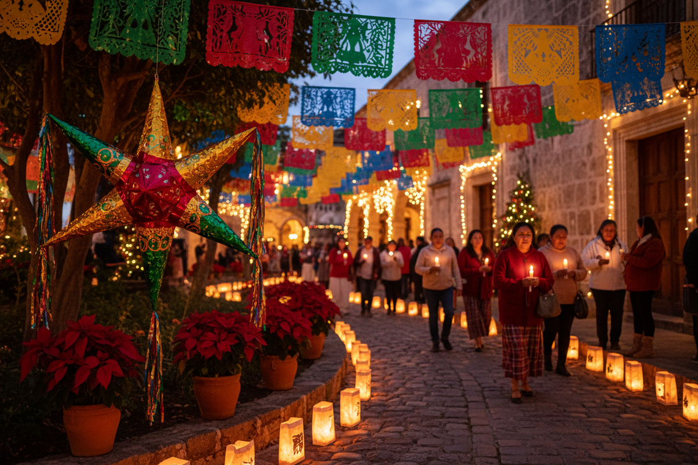

Adviento y Navidad
Las Santas Posadas
Cada mes de diciembre, nos unimos con fervor para acompañar a San José y a la Santísima Virgen María en su peregrinaje hacia Belén. Esta hermosa tradición católica nos permite preparar nuestros corazones para el nacimiento del Niño Jesús.
Durante nueve días, las imágenes peregrinas visitan los hogares de nuestra comunidad. Rezamos juntos el Santo Rosario, cantamos villancicos tradicionales, compartimos ponche caliente y fortalecemos los lazos de fraternidad que nos unen como familia legionaria.